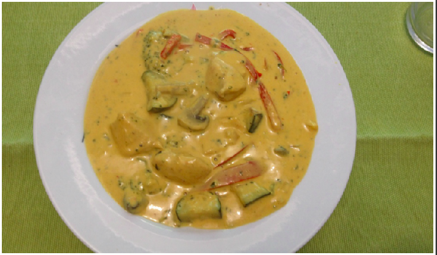
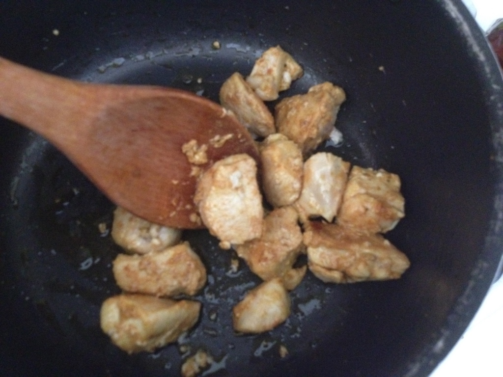
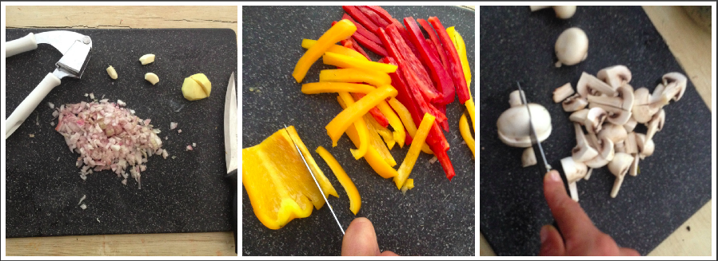
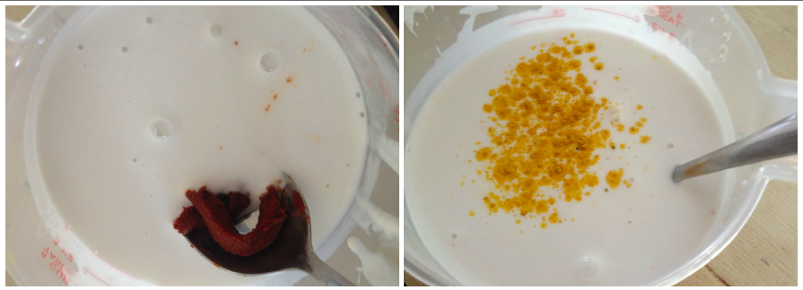
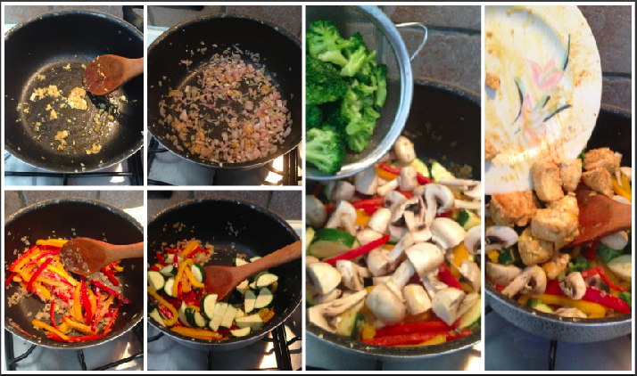
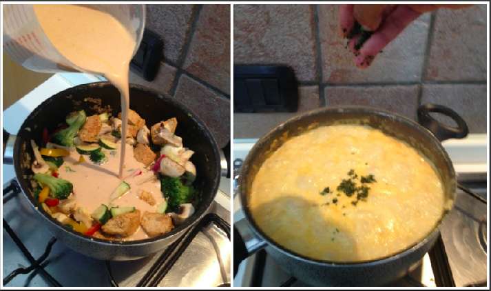

Curry Soup (fish or chicken)¶

- Serves: 2
- Type: main
Let’s talk about curry... I really LOVE curry!. I think is one of the most amazing spice in all the world. For years my curry experiences were about some main plate with some meat with veggies and white basmati rice as a side plate accompanied with curry sauce. Have you ever try to make the “scarpetta” with curry sauce and naan or chapati bread?. During my last journey in The Netherlands my brother in law invited us a “piece of heaven” in liquid state... curry soup!. He explained me how to make it and I decided to try my own version. You can make it with chicken or fish. If you decide to make it with fish, I recommend to use codfish filets or sea bream cut in dices. You can serve it as main plate if you reduce the coconut milk and you can serve it with white rice or some chapati bread if you are not in a low carb diet.
Ingredients¶
- Half medium chicken breast or 2 codfish/sea bream filets
- indian curry powder (at least 3 tablespoons)
- 100 ml chicken or fish broth (depending if you make the soup with chicken or fish)
- 1 coconut milk can
- 1/2 tablespoon red curry paste (Thai... if you like really spice use 1 tbs)
- 1 tablespoon fish sauce
- 1/2 small yellow bell pepper
- 1/2 small red bell pepper
- 4 sliced champignons
- 100 grams brocoli
- 3 garlic cloves
- 1 scallions
- Ginger root
- Fresh cilantro leaves
- Salt and pepper to taste
- Oil
Steps¶
Chop the meat in dices, sprinkle some curry powder, salt and pepper, add some oil in a pot and heat, then add the meat and stir fry it. If you want to give it a bit more taste add some fresh grated ginger (around 1 teaspoon). Keep aside.
Season the meat and brown it
Chop the garlic and the scallions, cut the vegetables (apart the broccoli) in slices.
Cut the vegetables
In a measuring pitcher mix the red curry paste (I recommend to mix first the curry paste with a bit of broth), broth, coconut milk, indian curry powder, the fish sauce, salt and pepper.
Mixing the liquids and curry
In a pot heat some oil, add the garlic and the scallions cook till the scallions become transparent. Add fresh grated ginger, then stir fry the peppers and cook for a few minutes, add the champignons and the broccoli. Put the meat back in the pot and cook for 2 minutes
Cooking the veggies and meat
Add the coconut milk mix to the pan and boil for 10 minutes. At the end of the cooking add the chopped cilantro leaves and serve.
Adding the liquid